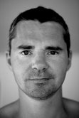
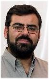
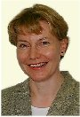
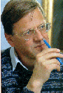
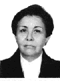
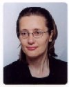
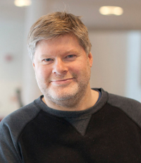
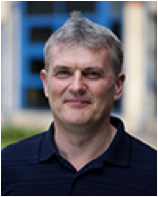
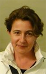

| Home |
| About IR |
| Editors |
| Author instructions |
| Copyright |
| Author index |
| Subject index |
| Search |
| Reviews |
| Weblog |
| InformationR.net |
| Register |
Information Research is published by the University of Borås, Allégatan 1, Borås 501 90, Sweden. Professor Tom Wilson is Editor-in-Chief and is assisted by Professor Elena Maceviciute, Deputy Editor, regional Editor, Eastern and Central Europe and Book Reviews Editor; and regional Editors, Professor José Vicente Rodríguez (the Luso-Hispanic countries); Dr. Charles Cole (North America); Dr. Amanda Cossham, (Australasia and S.E. Asia); Professor Nils Pharo (the Far East), Dr. Crystal Fulton (Africa and India) and Dr. Ola Pilerot (Western Europe). There is also an international Editorial Board and, very valuable members of the team, our Editorial associates, the copy-editors.
| Prof. Tom Wilson Editor in Chief |
Prof. Elena Maceviciute Deputy Editor |
Prof. José Rodríguez Editor, Luso-Hispanic Region |
Dr. Amanda Cossham Editor, Australasia/S.E. Asia |
Dr. Charles Cole Editor, North America |
 Prof. Nils Pharo Editor, The Far East |
Dr. Crystal Fulton Editor, Africa and India |
Dr. Ola Pilerot Editor, Western Europe |
Dr. Charles Cole has been an information science researcher, writer and teacher for over 25 years. He is also an information consultant (Colemining Inc.). He has been North American editor for the journal Information Research since 2011. Cole received his Ph.D. (Information Science) in 1994 from the University of Sheffield, his M.L.I.S. from McGill University in 1989 and his B.A. (History-Geography) from McGill University in 1978. Cole’s primary research interest is the concept of information need, which he has investigated at three levels: for Ph.D. students, for undergraduates and for middle school students. He has published 49 articles in peer-reviewed journals, including 19 in the Journal of the Association for Information Science and Technology. He has edited (with Amanda Spink) two books: New Directions in Human Information Behavior (2006) and New Directions in Cognitive Information Retrieval (2005), both books published by Springer. His book (2012) Information Need: A Theory Connecting Information Search to Knowledge Formation, was published by Information Today Inc., the ASIST publishing house. His latest book on information need, The Consciousness’ Drive: Information Need and the Search for Meaning (2018), again published by Springer. |
|
Dr. Crystal Fulton is a College Lecturer at the School of Information and Library Studies (SILS), University College Dublin. She received her PhD and MLIS in Library and Information Science from The University of Western Ontario, Canada. She is the Co-ordinator of SILS’ Information Behaviour Research Group and Director of the Networking for Leisure and wider Life & Information Behaviour Research in Everyday Experience (LIBREE) research initiatives. In addition to studying information behaviour in everyday life settings, including the workplace, she has been invited to share her work at various European Union conferences. Her current research examines the information worlds of individuals and groups engaged in leisure activities and the connections among a chosen hobby, community development, information literacy, and social inclusion. |
Dr. Elena Maceviciute is Professor at the Swedish School of Library and Information Studies, Gothenburg University/Boras University College, Sweden and Professor in the Faculty of Communication, Vilnius University, Lithuania. Her research areas include reference work, information and communication needs, international and intercultural communication, and information management. In addition to her academic work, Elena has worked as a consultant to the Lithuanian Ministry of Culture, the Lithuanian National Commission for UNESCO, the Committee of Europe and others. She teaches distance courses in International Communication studies, co-edits the scholarly journal Knygotyra (Book Science), is a member of the editorial of The Serials Librarian (USA), and a member of the Advisory Board for ICIMSS (Torun, Poland). She has published four books and almost sixty articles, and, has produced a number of translations of English language works (e.g.,, A. Conan-Doyle, The white company; P. Cornwell, The body of evidence; J. Fiske, Introduction to communication studies; and Blackwell's Encyclopedia of political science). |
Dr. Nils Pharo is Professor in knowledge organization and information retrieval at the Department of Archivistics, Library and Information Science (ALI) at Oslo and Akershus University College. He received his doctoral degree in information studies from the University of Tampere in 2002. He is the coordinator of the Department's master programme and leader of its research group on metadata-based information systems. For many years he was co-chair of the INEX interactive track. He is board member of NORSLIS, the Nordic Research School in Information Studies and member of the steering committee of the ESF-funded ELIAS (Evaluating Information Access Systems). He has more than 40 publications in a variety of journals, books and conference proceedings. His research interests include metadata interoperability, interactive information retrieval and information behavior. |
Dr. José Vicente Rodríguez is Professor Catedratico in the Information and Documentation Department, Faculty of Information Science, University of Murcia, Spain. Graduate in Chemistry, PhD in Computing Science. Guest Professor in the University of La Habana, Cuba. Co-ordinator of the UNITWIN Chair in 'Information Management in Organizations', sponsored by UNESCO. Member of the 50th Committee, Documentation, of AENOR (Spanish Association of Normalization and Certification). Scientific Consultant to several projects of the Regional Government of Murcia. Chief of the Information Technology Research Group of the University of Murcia. His research area, projects and publications, covers information management, information retrieval and evaluation of Web searching. |
Dr. Amanda Cossham is a Principal Lecturer in the School of Health and Social Sciences, The Open Polytechnic of New Zealand. Her professional and research interests include mental models of the bibliographic universe (particularly relating to functional requirements for bibliographic records), knowledge organisation, continuing professional development, graduate outcomes, and information management. Amanda is a member of the Editorial Board of the New Zealand Library and Information Management Journal, and the Regional Editor of Library Review: Global Knowledge, Memory and Communication.
|
Dr. Ola Pilerot is a lecturer at the Swedish School of Library and Information Science, University of Borås. He is a member of the Linnaeus Centre for Research on Learning, Interaction and Mediated Communication in Contemporary Society at the University of Gothenburg and the University of Borås, and of the International Information Literacies Research Network. His main area of research interest concerns information literacies in academia and scholarly information practices. In his doctoral thesis he explored the information practices of design research scholars and in particular their information sharing activities. Among his recent publications are papers published in, for example, Journal of Documentation, Information Research, Journal of the American Society for Information Science and Technology, and Library Trends. |
Dr. Thomas D. Wilson is Professor Emeritus in Information Management at Sheffield where he served as Head of the Department of Information studies from 1982 to 1997. Tom's principal research areas are information seeking behaviour and information management in which he has researched and published extensively. He is currently Senior Professor in the Högskolan i Borås, Sweden, and Visiting Professor at Leeds University Business School. He was also Profesor Catedratico Convidado in the Faculty of Engineering, University of Porto, Portugal, helping to develop and teaching on a Master's programme in information management. Most recently he was involved in a successful bid to the Swedish Research Council resulting in an award of SEK12 million for research into the e-book phenomenon. He is one of the most cited authors in the field of information behaviour. Information Research is the third journal he has established: it was preceded by the print journals, Social Science Information Studies and the International Journal of Information Management. He was awarded an Honorary Doctorate by the University of Gothenburg in 2005 for his services to library and information research in Sweden, and a second Honorary Doctorate by the University of Murcia, Spain, in 2010, for his lifetime contributions to information science. He was the recipient in 2017 of the Award of Merit of the Association for Information Science and Technology. |
Ronald Rousseau is President of ISSI (International Society of Scientometrics and Informetrics) and Associate Professor at KHBO (an engineering college at Ostend, Belgium) and at K.U.Leuven (Flemish Catholic University of Louvain). His research interests are in citation analysis and informetrics. He is a pioneer in the field of webometrics and co-author, with Leo Egghe, of Introduction to Informetrics, one of the most-cited books in the field. Ronald is very active in collaboration with Chinese colleagues, and as such has obtained an honorary professorship from Henan Normal University. He is, moreover, a guest professor at the National Library of Sciences Chinese Academy of Sciences (Beijing) and at Dalian University of Technology. |
|
Ricardo César Gonçalves Sant’Ana is Professor in the Departamento de Ciência da Informação of UNESP - Universidade Estadual Paulista, Marília. He holds degrees in mathematics and pedagogy, postgraduate in information technology and a PhD in information science. He is also an Editorial Board member for information science journals in Brazil. His research interests are in information science and technology for data access and aspects involved in increasing the transparency in governance for public and private sectors. |
|
|
Ricardo Baeza-Yates received his Ph.D. in Computer Science from the University of Waterloo, Canada, in 1989. In 2003 he was incorporated to the Chilean Academy of Sciences, being the first computer scientist to achieve this position. Currently he is director of Yahoo Research Latino America in Santiago, Chile and Yahoo Research Barcelona. During 2005 he was an ICREA Professor at Universitat Pompeu Fabra in Barcelona. He also was a professor and director of the Center for Web Research, that he founded in 2002, at the CS department of the University of Chile, where he was the chairperson in the period 1993-1995 and 2003-2004. His research interests include information retrieval, algorithms, and information visualization. He is co-author of the book Modern Information Retrieval (1999), co-author of the Handbook of Algorithms and Data Structures, 2nd ed. (1991) and co-editor of Information Retrieval: Algorithms and Data Structures (1992) His papers appear in journals published by ACM, IEEE or SIAM. |
Professor Diane Sonnenwald is Professor of Information Science at the Royal School of Library and Information Science, University of Copenhagen and an Adjunct Professor in Computer Science at the University of North Carolina at Chapel Hill. She was the first person working outside North America to be elected President of the Association for Information Science & Technology (ASIS&T), and served as President of the Association for Information Science & Technology in 2011-2012, the first person working outside of North America to be elected to that position. She continues to serve the ASIS&T community in multiple leadership roles. She has authored or co-authored over 85 publications and been awarded over 20 research grants from national and international foundations, corporations, and funding agencies, including the National Science Foundation, National Institutes of Health, National Library of Medicine, the European Science Foundation, and the Motorola Foundation. Her edited book, Theory development in the information sciences, is scheduled to appear next year. |
|
|
 Maija-Leena Huotari is Professor and Head of the Department of Information Studies at the University of Oulu, Finland, since 2003, and docent in information and knowledge management since 2001. With BA in economics, and MSc in Information Studies she received her PhD at the University of Sheffield, UK, in 1996. She worked in the Department of Information Studies at the University of Tampere, Finland, from 1997 to 2002 and was Deputy Head of Department, 2000-2002. She has published internationally and in Finland. She was a member of the editorial board of Finnish Information Studies (FIS), 1996-2003 (Chair 1997 and 2000) and Editor-in-Chief of Studies in Information Sciences (SISCI) of Tampere University Press in 2002. She is currently a member of the editorial boards of Information Research and of the Finnish journal Informaatiotutkimus. She was reporteur of the intermediate evaluation of the Multilingual Information Society Programme of the EU in 1998-99, and chair of the Total Quality Evaluation of the Libraries of Helsinki University in 1999-2000. Her research interests focus on information needs, seeking and use, organizational information behaviour, information management, and strategic management of information. |
|
Reijo Savolainen is Professor, Department of Information Studies at the University of Tampere, Finland. Currently, his research areas include information needs, seeking and use, especially the role of electronic networks in information seeking and communication. Reijo is also interested in the social and economic issues of library and information services. He has more than 40 articles in the field of information and library studies. International publications include the conference proceedings Information Seeking in Context (Taylor Graham, 1997), co-edited with Brenda Dervin and Pertti Vakkari. |
|
France |
Chris Kimble is an associate professor of Management Information Systems at Euromed Marseille, the École de Management, Marseille, France. Before this he lectured on Information Systems and Management at the University of York (UK), Information Technology at the University of Newcastle (UK) and was a researcher with both the Business School and the Computer Science department at the University of Northumbria (UK). His broad research interests are how to best 'manage' the fit between digital technologies and the social world. He is best known for his work on Communities of Practice and Knowledge Management, but he has also published articles on the clickstream analysis of web sites, on-line communities and distributed working. |
Dr Jean Henefer is the Research Development Officer for the National Behaviour Support Service (NBSS) in the Republic of Ireland. Her primary research area is in information behaviour (MLIS, PhD [focusing on the information behaviour of ethnic minority children and youths in Ireland] that has subsequently led to the creation and teaching of a post graduate module in Children and Young People’s Information Services at University College Dublin. The NBSS was established by the Department of Education and Skills in 2006 to support secondary schools in Ireland with regard to promoting positive behaviour for learning. In 2007, provision was made by the Department for a full time Research Development Officer. Dr Henefer was appointed at that time. Her work for the NBSS is comprised with developing policy documents, conducting field research across NBSS schools both quantitative and qualitative, statistical analyses of programme outcomes, liaising with relevant organisations and agencies and disseminating the work of the NBSS in national and international publications and conferences. |
|
Shunsaku Tamura is Professor in the School of Library and Information Science at Keio University. He is member of the Board of Trustees of the Japan Society of Library and Information Science and former member of the Board of Trustees of Japan Library Association. He has research interests in information behaviour of ordinary citizen; literacy and reading research; and management and evaluation of information and reference services, especially in public libraries. His publications include Information seeking and information use (2001, editor, text in Japanese) and various articles. He is currently working on a funded research project on the effects of information service to business in public libraries. |
Mexico |
Judith Licea De Arenas is Professor in the Faculty of Philosophy and Letters at the National University of Mexico. She holds a MA from the National University of Mexico, a MLib from the University of Wales and a PhD from the University of Strathclyde, Glasgow. Her current areas of research are bibliometrics, scholarly communication, LIS education and information literacy. She has been visiting professor and consultant to various academic institutions. |
New Zealand |
Amanda Cossham is a Principal Lecturer in the School of Information and Social Sciences, The Open Polytechnic of New Zealand. She is the Programme leader for information and library studies, and her professional and research interests include mental models of the bibliographic universe (particularly relating to Functional Requirements for Bibliographic Records), continuing professional development, graduate outcomes, and information management. She is also enrolled in doctoral studies at Monash University. Amanda is a member of the Editorial Board of the New Zealand Library and Information Management Journal, and an Associate Editor of Library Review. |
Dr. Sunniva Evjen is an Associate Professor in the Department of Archivistics, Library and Information Science at Oslo and Akershus University College. She holds a double BA in English translation and Library and information Science, an MA and a PhD in Library and Information Science, all from the Royal School of Library and Information Science in Denmark. Her main research interests are public libraries, library development and organization, library usage and the role of library professionals. |
|
Jela Steinerová is associate professor at Department of Library and Information Science, Comenius University Bratislava, Slovakia. She has been teaching subjects of Information Retrieval, Knowledge Organization and Information Analysis since 1992. At present she is head of the research project "Interaction of Man and Information Environment". Her research interests include information seeking behaviour, cognitive and social issues of information process, semiotics and digital libraries, and collaboration of libraries in central Europe. Among her published books are Theory of Information Retrieval, 1996, and Development of Information Products, 1998. She has published more than 70 research papers, chapters in books, and articles, in national and international publications. She is also engaged in several editorial and expert advisory boards, e.g., the international advisory board of ICIMSS in Torun (Poland) and is a member of other professional international associations, e.g., ISKO. She has also worked in the areas of research and methodology of library automation and as a consultant. She has been actively involved in managing conferences, lecturing at international and national conferences (e.g.,, Tallinn, Cologne, Zurich, Warsaw, Sofia), and at Masaryk University in Brno (Czech Republic). She also participated in several study visits abroad (e.g., Oxford, Florence, Washington, and Brussels). |
|
|
|
Spain |
|
Dr. Elías Sanz-Casado is Professor and Head of the Department of Library and Information Studies at Carlos III University of Madrid (Spain) where he runs the Information Metrics Studies Laboratory. He has also been Visiting Professor at the University of Puerto Rico. For several years he has been a scientific consultant on research projects for the Spanish Ministry of Science and Technology, and the Regional Government of Madrid. He has research projects with several Latin American countries. His main research area and publications cover bibliometrics and scientometric analysis, user studies and information behaviour. He is Member of the Editorial Boards of several information science journals in Spain and Latin American countries. |
Dr. Francisco Javier Martinez Mendez teaches Information Technology in the Information and Documentation Department of the University of Murcia, Spain. This department belongs to the Faculty of Information Science and Communication. Graduate and PhD in Information and Documentation. Professor of the UNITWIN Chair in 'Information Management in Organizations', sponsored by UNESCO. Member of the Information Technology Research Group of the University of Murcia. At present, he is the Head of Department and Associate Member of the ISIC Permanent Committee. He also participates as a referee in Spanish journals in our area. His research area, projects and publications covers information management, information retrieval and its evaluation. He is also the author of the blog, recuperación de información en la web. |
|
Dr Fredrik Åström is docent in Information Studies at Lund University; and works at the University Library in Lund as an expert on scholarly communication, bibliometrics and research evaluation. His research in information studies, bibliometrics and science studies has been published in journals such as JASIS&T, Journal of Documentation and Research Policy; and he is a frequent member of the Scientific Committees for the ISSI and STI conferences. He also lectures on a regular basis in both academic courses and programmes, as well as in library conferences and courses, throughout Scandinavia; and is a member of The Bibliometrics Expert Group of The Association of Swedish Higher Education. |
|
Victor Kaptelinin is a Professor at the Department of Informatics, Umeå University, Sweden. Before joining the Department Victor held teaching and research positions at the Psychological Institute of Russian Academy of Education, Moscow Lomonosov University, and University of California in San Diego, USA. His main research interests are in interaction design, activity theory, and educational use of information technologies. He is a member of TEAMS, a research group at the Department of Informatics. |
|
Dr. Jan Nolin is Professor of library and information science at the Swedish School of Library and Information Science, University of Borås. He completed his PhD in theory of science in 1995. Current research involves theoretical perspectives on renegotiation of practices connected to emerging information technology. One main focus has been the development of interdisciplinary research areas such as information studies, Internet studies and social media studies. Additional research interests concerns theory of professions and the integration of the values of sustainable development within information science. Recent publications include use of bibliometric methods as well as a focus on the transformation of academic libraries and new library services. |
|
United Kingdom |
|
David Allen is Professor of Information Management in the Business School of Leeds University. His research deals with information systems and their implications for work and organisation, particularly at the strategic level. He also has an interest in the current discourse about the socio-philosophical foundations of information systems and information management. David manages the AIMTech Research Group in the business school, which carries out research and consultancy work on the development and implementation of mobile information systems in the emergency services—police, fire services and ambulance services and in the public sector generally. David holds an MSc in Information Systems from Stirling University and a PhD in Information Management from Sheffield University |
|
Simon Burnett is Professor and Theme Leader for Information and Communication research in the Institute for Management Governance and Society (IMaGeS) at Robert Gordon University, Aberdeen. He is also an Associate Director of the Scottish Graduate School for Social Science, based at the University of Edinburgh. His research focusses on the use of information and knowledge for decision-making, the role of knowledge in innovation, the use of narratives in knowledge sharing, the development of knowledge-based strategies, and knowledge mapping. |
|
Dr. Andrew M. Cox is a senior lecturer, at the Information School, University of Sheffield. He received a PhD from the Department of Information Science, University of Loughborough in 2006. He has research interests in practice theory as applied to information and in social media. He also writes about Research Data Management. He is head of Digital Societies research group at the Information School. |
Ian Ruthven is Professor of Information Seeking and Retrieval, Department of Computer and Information Sciences, University of Strathclyde. His research focuses on information seeking behaviour, particularly of disadvantaged groups, interactive information retrieval, access to digital cultural heritage and the instrumental uses of information. He is the co-editor of books on interactive information seeking, behaviour and retrieval and on cultural heritage information access and management. |
|
United States of America |
|
Dr. William Aspray is the Bill and Lewis Suit Professor of Information Technologies in the School of Information at the University of Texas at Austin. He has formal education in mathematics, philosophy, and history of science, and experience in information policy in Washington, DC. His research concerns the historical, social, and political study of information, information technology, electrical technologies, and mathematics. Particular areas of interest within information studies include information history, everyday information behavior, information work, and information policy. |
|
Sheila Corrall is Professor and Chair of the Library & Information Science programme at the University of Pittsburgh School of Information Sciences. She joined the Pitt iSchool in 2012, following eight years at the University of Sheffield Information School. She was previously worked as a senior manager at the British Library and as director of library and information services at three UK universities. At Pittsburgh she teaches courses on Academic Libraries, and Research Methods in Library & Information Science. Her research interests include the application of strategic management concepts and tools to library and information work, the roles and competencies of library and information specialists, and collection development in the digital world. She also leads a collaborative research group in the area of digital scholarship, based on a partnership between the iSchool and the University of Pittsburgh Library System. |
|
|
Marija Dalbello is an associate professor of information science at the School of Communication and Information at Rutgers University. Her research, teaching and publications focus on the theory and history of knowledge and information, visual genres and visual epistemologies, history of the book, and digital libraries. She has published in leading journals in librarianship and information science and, most recently, co-edited A history of modern librarianship: constructing the heritage of western cultures with Wayne Wiegand and Pamela Spence Richards (2015). For her article A genealogy of digital humanities published in the Journal of Documentation she received
2012 Literati Network Award for Excellence. |
Jonathan Furner (M.A. Cambridge 1990, Ph.D. Sheffield 1994) is Professor and Chair of the Department of Information Studies at the University of California, Los Angeles, and is a faculty affiliate of UCLA’s Center for Digital Humanities. Furner studies the history and philosophy of cultural stewardship, and teaches classes on the representation and organization of archival records, library materials, and museum objects. He has published over fifty papers on these and related topics, frequently using conceptual analysis to evaluate the theoretical frameworks, data models, and metadata standards on which information access systems rely. Furner chairs the Association for Information Science and Technology’s special interest group on classification research (ASIS&T SIG/CR), and the Dewey Decimal Classification’s editorial policy committee (DDC EPC). He is associate editor of JASIS&T, co-editor of book series for MIT Press and Facet (UK), and a regular reviewer of contributions to journals and conferences in the fields of philosophy of information, knowledge organization, and bibliometrics. |
Jim Jansen is an Assistant Professor at the College of Information Sciences and Technology at The Pennsylvania State University. His research encompasses a broad multi-disciplinary agenda that seeks to identify and influence societal patterns of information dissemination and usage by helping people locate relevant information. Specific areas of focus include Web searching, general systems theory and information system design. Dr. Jansen has approximately 100 publications in the area of information technology and systems. He has received several awards and honours, including an ACM Research Award and six application development awards, along with other writing, publishing, research, and leadership honours. |
Dr. Bonnie Nardi is a Professor in the Department of Informatics in the Donald Bren School of Information and Computer Sciences at the University of California, Irvine. Her areas of research are activity theory, interaction design, computer-mediated communication and society and technology. She is especially interested in expressive uses of the Internet, including blogging, instant messaging, and gaming. She is the author, with Victor Kaptelinin, of Acting with technology: activity theory and interaction design. (MIT Press, 2006). |
Dietmar Wolfram is Associate Professor in the School of Library and Information Science at the University of Wisconsin-Milwaukee. His research interests are in information retrieval (IR) systems design and evaluation, modeling and simulation of IR systems, applied informetrics, and technology education for information professionals. His publications have appeared in key information science journals including the Journal of the American Society for Information Science, Information Processing and Management, Library and Information Science Research, and Journal of Information Science. His recent research projects have included an evaluation of web-based education for information professionals and investigations of empirical regularities in end user searching behaviour using a major Internet search engine and Internet-based commercial databases. |


Our copy-editors do rather more than simple copy-editing of a paper, since close attention to the wording often reveals incomplete sentences or unintelligible writing. From my point of view, therefore, the term 'editorial associate' describes their role better.
 Jennifer Brotherton is a Customer Services Librarian at University of Wolverhampton, with customer service experience in both retail and information sectors. After graduating with a BA (Hons) in History, Jennifer spent one year volunteering at public libraries, gaining experience to enrol on an MA in Information and Library Science at Loughborough University. Her final year dissertation was nominated for the Library and Information Research Group’s Student Award. She is a Chartered Member of CILIP and Secretary of ARLG WM (Academic & Research Libraries Group, West Midlands).’ Jennifer Brotherton is a Customer Services Librarian at University of Wolverhampton, with customer service experience in both retail and information sectors. After graduating with a BA (Hons) in History, Jennifer spent one year volunteering at public libraries, gaining experience to enrol on an MA in Information and Library Science at Loughborough University. Her final year dissertation was nominated for the Library and Information Research Group’s Student Award. She is a Chartered Member of CILIP and Secretary of ARLG WM (Academic & Research Libraries Group, West Midlands).’ |
Jordan Gan is working towards a Masters in Information and Library Studies at Robert Gordon University. She currently holds a Bachelor's in History and English Literature from the University of British Columbia. She is interested in the different aspects of digitisation and the challenges of redundant technology and formats for the archiving of information. Her other interests include dogs, ice hockey, and David Attenborough nature programmes. | |
| Beth Gibbs holds a Masters in Information and Library Studies from Aberystwyth University and a PGCHE from Nottingham Trent University. She has worked as a librarian in further and higher education libraries in the UK and is currently a manager in the Radcliffe Science Library, part of the Bodleian Libraries at the University of Oxford. | Lauren Goodchild is a government librarian in the UK. She holds a Masters in Information and Library Management from Loughborough University. She has previously worked as an information manager for an education research consultancy and as an assistant librarian for a national newspaper. | |
| Ian Haydock is currently Systems Manager at Keele University Library, and has worked in UK Higher Education libraries for nearly 30 years in a variety of roles. He is a Chartered Member of CILIP and has a Postgraduate Diploma in Librarianship from Manchester Metropolitan University as well as Masters degrees in Information Systems and Archaeology. His professional interests include information systems and retrieval. | Lyndsey Middleton is studying towards a PhD in Information Science at Edinburgh Napier University, Scotland, UK. Her research explores how workplace leaning can be used to support the development of "Innovative Work Behaviour", studied from the information science perspective. Lyndsey holds a Bachelor’s in Psychology from Northumbria University and also a Masters in Developmental Psychopathology from Durham University. | |
| Catherine Kerrigan is a PhD student at the University of South Australia, researching the role of independent libraries. She is also the Librarian at the Adelaide Central School of Art, one of only two independent art schools in Australia. She retrained as a librarian on her return to Australia in 2009, after nearly sixteen years in the UK. | Madeleine Pearson works at The University of Manchester in the UK. She holds an MA in Publishing Studies and a BA (Hons) in Modern Language Studies, and has worked in academic libraries, at a higher education charity, and in trade publishing. Her professional interests include bibliometrics and digital monograph publishing. | |
| Olywen Pennington holds a BA Hons in Modern Languages from the University of Bradford and a MSc in Library and Information Management from Loughborough University. Olwen currently works in the Academic Liaison team at Edge Hill University, and previously held various information management positions in law firms. | Camille Roccanova is working on her Master's degree in Archives Management at Simmons College, and holds an undergraduate degree in painting and printmaking from Bennington College. She currently manages a private art collection. | |
| Hannah Speight holds a Masters in Librarianship from the University of Sheffield, together with a Masters in Historical Research and a BA in History from Lancaster University. She has worked as a subject librarian at Coventry and Warwick universities and more recently in student skills development at Durham University. She is currently a full-time Mum. | ||
This page is maintained by Professor Tom Wilson. wilsontd@gmail.com Last up-date: 28 August, 2017